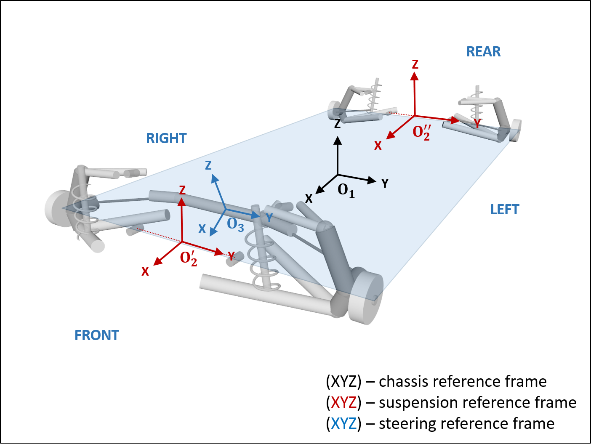
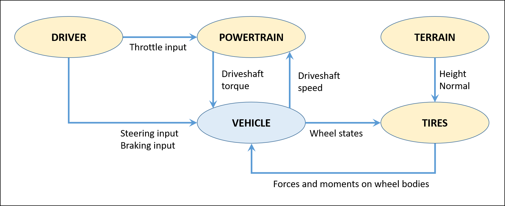

车辆建模与模拟概述
Chrono::Vehicle 模块提供了适用于轮式和履带式车辆子系统的各种拓扑结构的模板集合，支持对刚性、柔性和颗粒状地形进行建模，支持闭环和交互式驱动模型，以及模拟结果的运行时和离线可视化。
车辆系统的建模采用模块化方式，车辆定义为各种子系统（悬架、转向、传动系统等）实例的集合。采用基于模板的设计可实现建模的灵活性。在 Chrono::Vehicle 中，模板是参数化模型，用于定义车辆子系统的特定实现。因此，模板定义基本建模元素（车身、关节、力元素），强加子系统拓扑，规定设计参数，并实现特定于特定模板（例如双叉臂）的特定类型子系统（例如悬架）的通用功能。最后，通过为具体车辆（例如 HMMWV 前悬架）指定模板参数（硬点、关节方向、惯性属性、接触材料属性等）来获得此类模板的实例。
Chrono::Vehicle 中的核心模板是车辆子部件的参数化模型。但是，完整的车辆移动模拟还需要车辆本身之外的辅助系统，例如提供输入控制（例如转向、油门、制动）的驾驶员系统、封装发动机和变速箱并连接到车辆传动系统的动力系统以及地形系统。
对于轮式车辆系统，提供了以下子系统的模板：
- 悬架（双叉臂、利用距离约束缩短的双叉臂、多连杆、实心轴、麦弗逊式支柱、半拖曳臂……）
- 转向（转向臂、齿条齿轮）
- 传动系统（2WD 和 4WD 轴采用专门的 Chrono 建模元素，简化的运动传动系统）
- 车轮（简单地说，是附加在悬架主轴上的额外质量和惯性的载体） 制动器（简单模型，使用由驾驶员制动输入调节的恒定扭矩）
Chrono::Vehicle 提供各种轮胎模型和相关模板，从刚性轮胎到半经验模型（如 Pacejka 和 Fiala），再到用有限元建模的完全可变形轮胎（使用绝对节点坐标公式或共旋转公式）。
- 履带板（单销式和双销式）：单销式就是两个履带块相互结合之后以一根长钢钉连结，两端固定好；双销式就是两个履带块直接在两端固定接合。
- 相关链轮模板（带有相应的齿轮轮廓）
- 悬架（带线性或旋转阻尼器的扭转弹簧，液压）
- 惰轮（带张紧机构）
- 滚筒
作为中间件库，Chrono::Vehicle 要求用户提供 C++ 类来具体实例化特定模板。可选的 Chrono 库为一些地面车辆（包括轮式和履带式）提供了完整的此类具体 C++ 类集，可作为其他特定车辆模型的示例。虽然此类类通常非常轻量，但这需要一定的编程经验。为了解决这个问题，我们提供了一种替代机制来定义车辆系统和子系统模板的具体实例，该机制基于 JSON 格式的输入规范文件。
根据给定类型（轮式或履带式）的子系统模板层次结构，可以通过指定具体模板参数的相应 JSON 文件层次结构来完整定义车辆，否则将推迟到子组件的进一步 JSON 规范文件。以下是轮式车辆的顶级 JSON 规范文件的示例。连同它引用的所有其他输入文件，此 JSON 文件完整描述了具有两个轴的具体轮式车辆，前后均使用双叉臂悬架，前轴上安装有转向臂转向机构，后轮传动系统。
{
"Name": "Test vehicle - Double Wishbone",
"Type": "Vehicle",
"Template": "WheeledVehicle",
"Chassis": {
"Input File": "generic/chassis/Chassis.json"
},
"Axles": [
{
"Suspension Input File": "generic/suspension/DoubleWishbone.json",
"Suspension Location": [1.25, 0, -0.21],
"Steering Index": 0,
"Left Wheel Input File": "generic/wheel/WheelSimple.json",
"Right Wheel Input File": "generic/wheel/WheelSimple.json",
"Left Brake Input File": "generic/brake/BrakeSimple.json",
"Right Brake Input File": "generic/brake/BrakeSimple.json"
},
{
"Suspension Input File": "generic/suspension/DoubleWishbone.json",
"Suspension Location": [-1.25, 0, -0.21],
"Left Wheel Input File": "generic/wheel/WheelSimple.json",
"Right Wheel Input File": "generic/wheel/WheelSimple.json",
"Left Brake Input File": "generic/brake/BrakeSimple.json",
"Right Brake Input File": "generic/brake/BrakeSimple.json"
}
],
"Steering Subsystems": [
{
"Input File": "generic/steering/PitmanArm.json",
"Location": [1.1, 0, -0.4],
"Orientation": [0.98699637, 0, 0.16074256, 0]
}
],
"Driveline": {
"Input File": "generic/driveline/Driveline2WD.json",
"Suspension Indexes": [1]
}
}
参考框架
每个车辆子系统都是根据其自己的参考系定义的；换句话说，车辆子系统模板中的所有受力点位置都必须根据子系统的参考系提供。然后，车辆系统（无论是轮式还是履带式）被构建为其组成部件的具体模板实例集合，方法是指定它们相对于车辆参考系的位置和方向，并根据需要提供连接信息（例如，将特定的转向机构连接到轮式车辆的特定车轴/悬架）。
对于建模，Chrono::Vehicle 仅使用 ISO 车辆轴约定，即右侧框架，X 向前，Z 向上，Y 指向车辆左侧（参见 ISO 8855:2011）。下图说明了车辆参考系 （按照惯例与底盘子系统的参考系对齐），以及子系统参考系（ 和 表示前后悬架， 表示转向机构），适用于双轴轮式车辆。

模拟世界框架
虽然 Chrono::Vehicle 模拟的默认世界坐标系也是 ISO（Z 向上）坐标系，但支持模拟在不同参考坐标系（例如 Y 向上坐标系）中指定的场景中的车辆。世界坐标系通过旋转矩阵（将 ISO 坐标系与所需世界坐标系对齐所需的旋转）唯一定义。要从默认 ISO 约定更改世界坐标系定义，必须在任何 Chrono::Vehicle 库调用之前设置所需世界坐标系：
ChWorldFrame::Set(world_rotation);
提供了一种快捷方式来指定 Y 向上（X 向前，Z 向右）的世界框架：
ChWorldFrame::SetYUP();
ChWorldFrame类提供实用程序来查询世界法线、前向、给定 3D 点的高度（沿世界垂直方向的分量），将点投影到世界的水平面上，以及表达往返于基本 ISO 框架的 3D 向量。
请参阅 demo_VEH_HMMWV9_YUPY 向上世界框架中的 Chrono::Vehicle 模拟的示例。
模拟循环
Chrono::Vehicle 模拟循环采用力-位移联合模拟方案的形式，下面两张图分别说明了轮式车辆和履带式车辆的交换数据。

此模拟流程通过 Chrono::Vehicle API 强制执行，该 API 要求所有系统都提供一种实现数据交换的Synchronize方法和一种实现系统动态的 Advance 方法（即，将系统状态推进到下一个数据交换时间点）。但请注意，使用 Chrono::Vehicle 中提供的辅助系统的车辆移动模拟实际上将是一个整体的、一次性耦合的模拟。